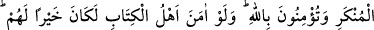

EN HAYIRLI ÜMMET
110. Siz, insanların iyiliği için ortaya çıkarılmış en hayırlı ümmetsiniz; iyiliği
emreder, kötülükten meneder ve Allah’a inanırsınız.
111. Onlar (ehl-i kitap) size, incitmekten başka bir zarar veremezler. Sizinle
savaşa girecek olsalar, size arkalarını dönüp kaçarlar. Sonra kendilerine yardım da
edilmez.
112. Onlar (yahûdîler) nerede bulunurlarsa bulunsunlar, Allah’ın ahdine ve
insanların (mü’minlerin) himayesine sığınmadıkça kendilerine zillet (damgası)
vurulmuştur; Allah’ın hışmına uğramışlar ve miskinliğe mahkûm edilmişlerdir.
Çünkü onlar, Allah’ın âyetlerini inkâr ediyorlar ve haksız yere peygamberleri
öldürüyorlardı. Bu da, onların isyan etmiş ve haddi aşmış bulunmalarındandır.
“Siz insanlar için çıkarılmış en hayırlı ümmetsiniz.” Yani, insanların maslahat ve
menfaati için ortaya çıkarılmış bir ümmetsiniz.
“İyiliği emreder, kötülüğü menedersiniz.” Bu cümle, ümmetlerin en hayırlısı olma
sebebinin açıklandığı bir başlangıç cümlesidir. Sanki şöyle denmiş oluyor: Ümmet-i
Muhammed’in en hayırlı ümmet oluşunun sebebi bu övgüye lâyık hasletlerdir. Maksat,
hayırlı oluşlarının illetini açıklamaktır. “Zeyd, cömerttir, insanları doyurur, giydirir”
sözümüzde olduğu gibi. Çünkü: Bir hükmü, bu hükme uygun bir vasıfla beraber
zikretmek, bu vasfın hükmün sebebi olduğunu gösterir.
Peygamber, kitap, hesap ve ceza gibi îman edilmesi gereken her şeyi içine alan bir
îmanla “Allah’a inanırsanız. Kitap ehli de inanmış olsaydı, kendileri için elbette iyi
olurdu.” Yani, onlar da sizin gibi îman etselerdi, önderlik ve avâmı peşlerinden
sürüklemek gibi; el’ân yaşamakta oldukları özelliklerden daha hayırlı olur; îman